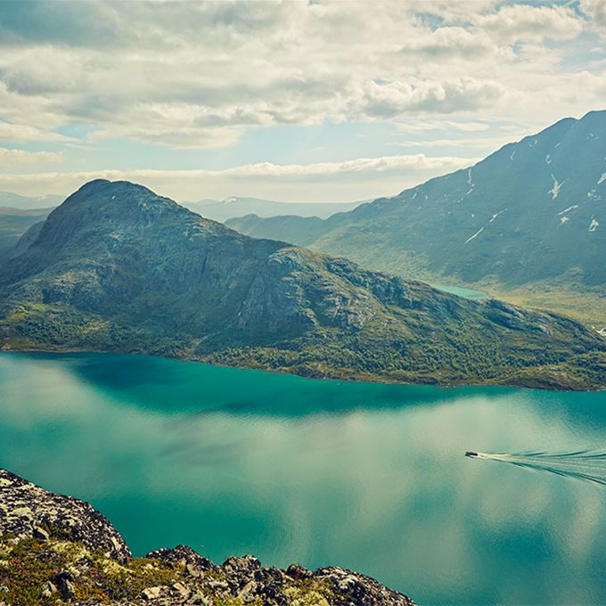

Hva vi kan tilby
I samarbeid med Den norske Turistforeningen kan vi tilby våre egne sammensatte ruter og turer med guide. Vi har også et godt utvalg hytter som man kan bestille og benytte seg av. Her har vi egne kokker som lager både frokost og middag. Hyttene kan bli bestilt i forkant eller bestilt når man ankommer turhyttene. Vi har store haller mann kan sove i, eller bestille egne rom som er plass til henholdsvis 4, 6 eller 8 mannsrom. Vi har moderne dusj og do fasiliteter på hyttene.
Hos opplev norge kan man bestille turer i hele norge. Vi har store begivenheter og aktiviteter i både Rondane og Jotunheimen, som er de mest ettertraktede turområdene vi tilbyr.
Vi kan tilby flere spennende turer og arrangementer her hos oss. Vi har daglige guida turer over beseggen i hele høstferien og booker ofte artister for å holde konserter på våre turhytter. I år har vi flere kjente artister som skal fremføre kjente og kjære låter, men også noe nytt. To ganger i året arrangerer vi særdeles omfattende Isbree turer over blant annet Jostedalsbreen og Nigardsbreen. Disse turene blir fort utsolgt så her gjelder det å være førstemann til mølla!
